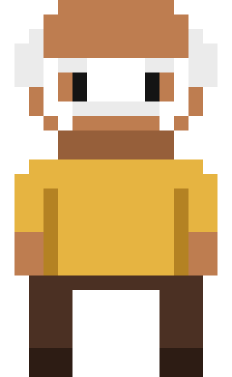

Char: Old Resident
Class: Town Elder / Civilian
Context: A peaceful town resident recognized by his classic yellow shirt, brown trousers, and white mustache.
Lore: Having spent decades witnessing the village grow, he offers wise advice and old folklore to traveling adventurers passing through.